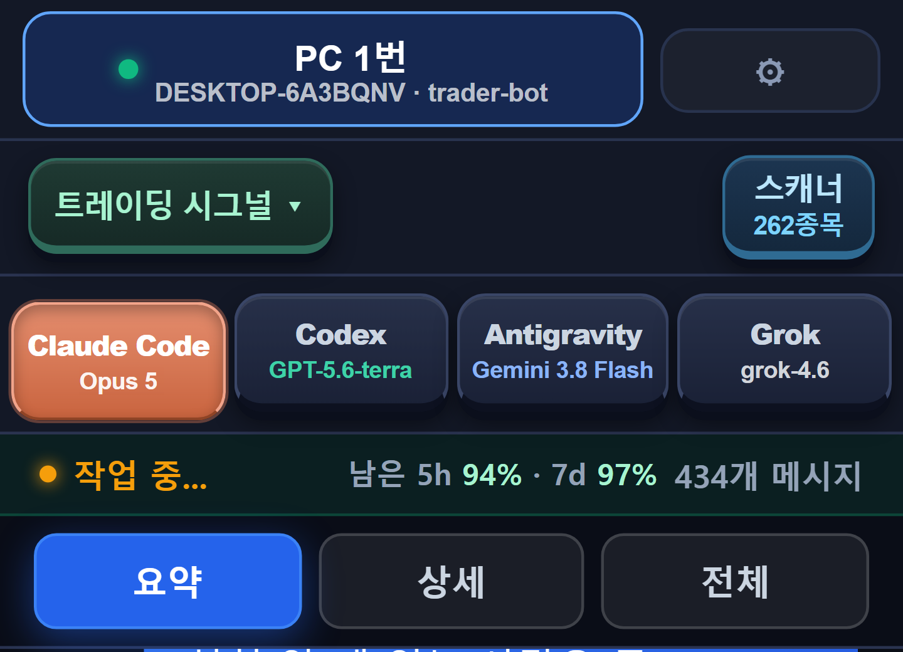
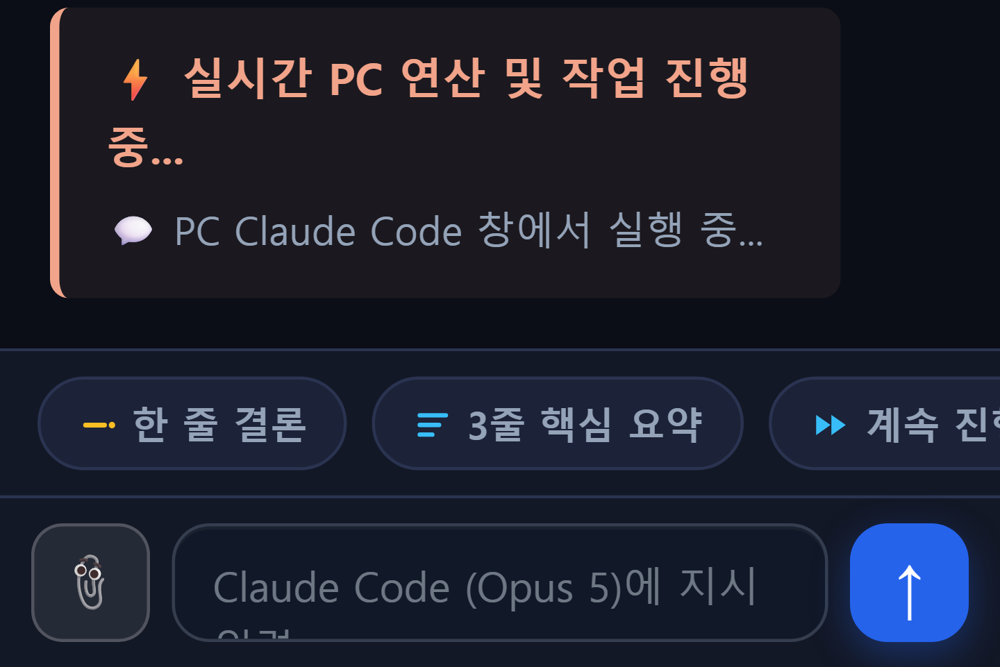
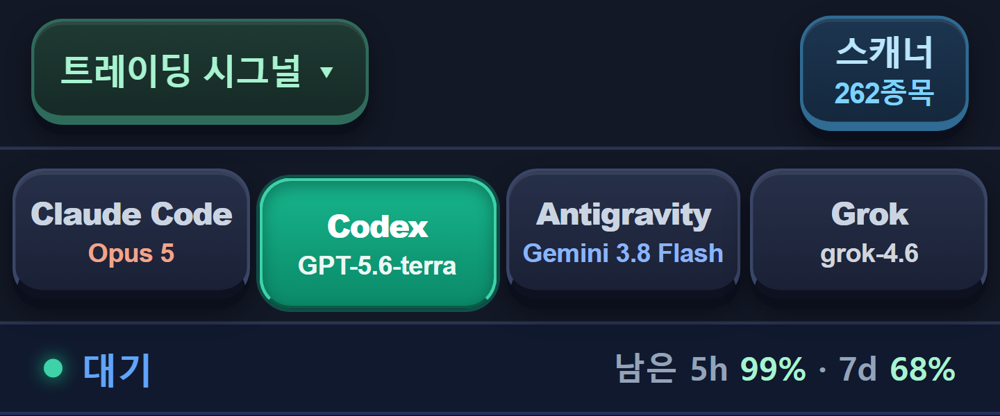
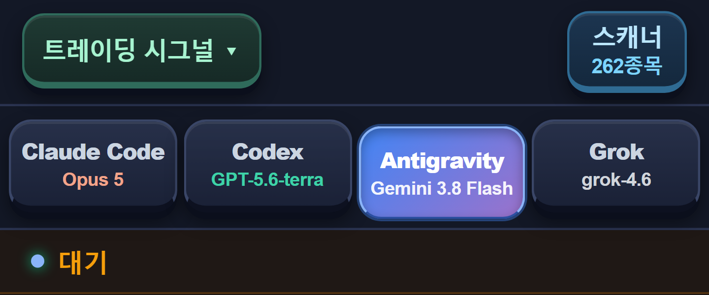
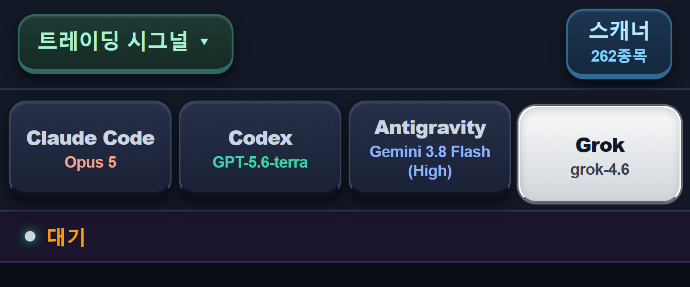
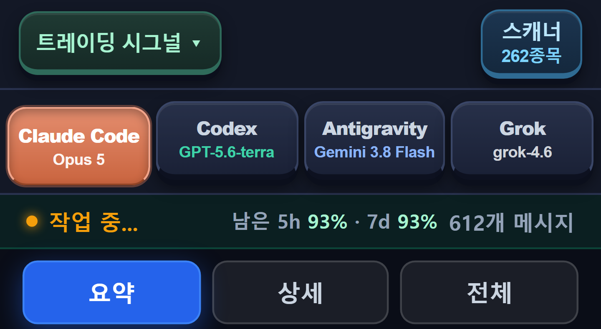
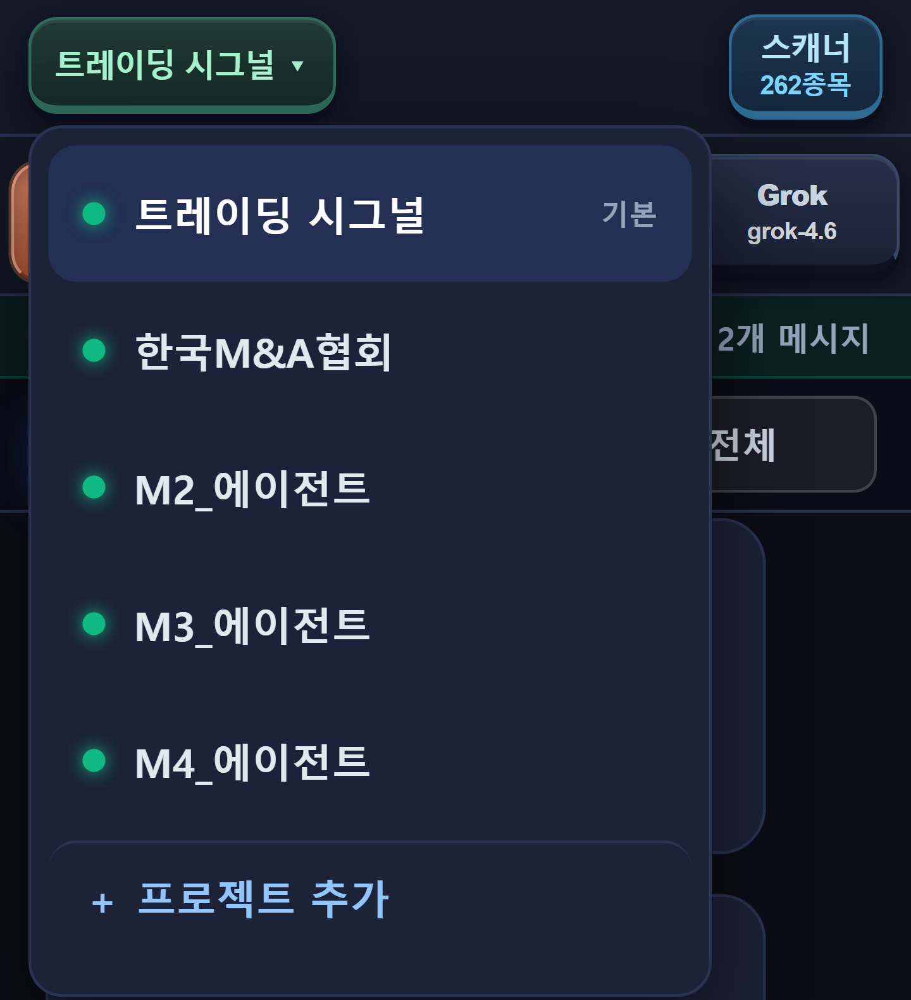
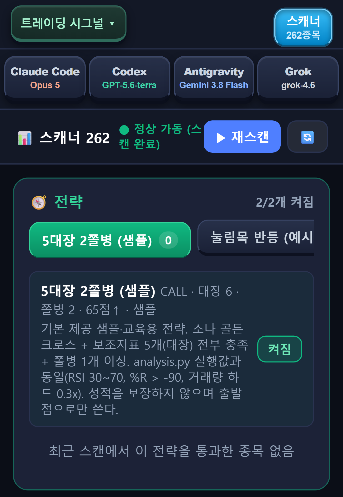

출퇴근길·회의 중·침대에서 폰으로 지시하면 집·사무실 PC의 Claude Code·Codex·Antigravity·Grok이 일하고, 결과가 말풍선으로 돌아옵니다.

준비물: Windows PC + Node.js + Claude Code(각자 구독) · 안드로이드 폰
공인회계사(20년)이자 AI 마스터가 직접 만들고 매일 쓰는 도구입니다 — 소개: saa.house/about
지금까지는 "PC 앞에 앉을 때까지" 기다려야 했습니다.
"어제 스캔 결과 정리하고 전략 B도 백테스트 돌려 놔." 한 줄 보내면, 사무실 도착 전에 PC에서 끝나 있습니다. 결과는 요약 한 줄로 먼저 봅니다.
급한 수정 요청이 왔을 때 폰에서 조용히 지시만 던져 둡니다. 답이 오면 3줄 핵심 요약으로 확인하고 다시 회의로.
오래 걸리는 작업을 맡기고 잡니다. 이상하면 긴급 정지 한 번. 아침에 폰을 열면 결과가 말풍선으로 와 있습니다.

실제 화면: PC 창에서 실행 중인 상태가 폰에 그대로 표시되고, 아래 칩으로 결론만 받아볼 수 있습니다.
6가지가 다릅니다. 전부 실제 화면입니다.
Claude Code가 메인, Codex·Antigravity·Grok은 부르면 일어나는 데몬 워커. 네 AI 모두 같은 폴더에서 파일을 읽고 쓰고 명령을 실행합니다. 한 AI의 답을 다른 AI에게 검토시키는 것이 탭 한 번입니다.



헤더 우측 "남은 5h · 7d"는 Claude·Codex 구독의 5시간/7일 잔여 한도입니다(60초 갱신). 한도 걱정 없이 어디까지 시킬지 바로 판단합니다.
폰 채팅창에 쓴 글이 PC의 Claude Code 창에 그대로 타이핑되고, PC 창의 대화가 폰에 그대로 비칩니다. 별도 세션이 아니라 평소 쓰던 그 창입니다. 그래서 내 프로젝트 폴더·설정·기록을 전부 아는 상태로 일합니다.

대화는 요약 / 상세 / 전체 세 단계로 봅니다. 폰에서는 요약만, PC에 앉으면 전체를.
설정 화면 없이 폴더 하나를 등록하면 새 작업대가 생깁니다. 트레이딩·블로그·논문·쇼핑몰… 폴더가 곧 지식베이스라 프로젝트끼리 섞이지 않습니다. 상단 버튼으로 바로 갈아탑니다.

국내 주식 262종목 스캐너와 샘플 전략이 들어 있습니다. 전략은 켜고 끄고, 통과 종목을 1단계·2단계로 나눠 봅니다. 자세한 것은 아래 "말로 전략 만들기".

입력창 옆 📎 하나로 폰 기본 선택창(카메라·캠코더·파일)이 바로 뜹니다. 올린 파일은 그 프로젝트 폴더에 저장되고, 선택한 AI가 바로 분석합니다. 차트 캡처, 계약서 사진, 회의 녹음 그대로.
PC가 서버, 앱은 화면입니다. AI 대화·파일·시세·주문은 사용자 PC 안에서만 오갑니다. 우리 서버(허브)가 저장하는 것은 4항목뿐 — 기기명·프로젝트명·접속 주소·마지막 확인 시각. 자세한 구조는 아래.
지표 조합을 문장으로 말하면 Claude Code가 전략 파일을 만들고 검증·백테스트까지 합니다.
폰 채팅창에 평소 말하듯 씁니다.
PC에서 실행됩니다. 사람이 코드를 만질 일은 없습니다.
만든 전략이 스캐너 전략 탭에 나타납니다. 스위치를 켜면 262종목 스캔 결과가 그 전략으로 걸러집니다. A/B/C… 개수 제한 없이 저장·비교·백테스트.
2단계 정밀 신호·실매매는 사용자 본인의 증권사(한국투자증권) Open API 키가 필요합니다. 키가 없어도 1단계 스캔과 다른 모든 기능은 동작합니다. 실행기(트레이딩 봇)는 무료 다운로드이며, 주문 전 승인 요청이 기본으로 켜져 있습니다.
트레이딩 시그널은 기본 제공 프로젝트일 뿐. 폴더를 추가하면 무엇이든 작업대가 됩니다.
원고 폴더를 등록하고 출근길에 "어제 초안 다듬어 줘".
자료 폴더가 지식베이스. 참고문헌까지 그 안에서.
상품 데이터·이미지 폴더를 AI 4종이 나눠 처리.
Claude Code가 고치고 Codex가 검토. 탭 두 번.
프로젝트마다 Claude Code 창이 따로 뜨고, 지시는 그 폴더에서 뜬 창에만 들어갑니다. 다른 프로젝트 창으로 새지 않습니다.
대화·파일·계좌 키가 외부 서버를 거치지 않는 이유.
허브는 "어느 PC가 지금 어느 주소에 켜져 있나"를 알려주는 안내판 역할만 합니다. 폰과 PC가 연결된 뒤에는 허브를 거치지 않습니다.
설치법을 읽는 게 아니라, 설치 지시문을 Claude Code에게 건넵니다.
이미 쓰고 있다면 건너뜁니다.
Claude Code가 지시문을 읽고 서버·터널·페어링을 스스로 설정합니다. 공유기 설정·포트 개방 없음.
PC가 켜져 있으면 초록불. 탭을 누르면 바로 연결됩니다. 여기까지 약 10분.
사고 나서 알면 늦으니까.
아무것도 안 됩니다. PC가 서버이고 앱은 화면이기 때문입니다. 출근 전에 PC를 켜 두거나 절전을 끄는 것이 전부입니다. 대신 그 덕분에 대화·파일이 외부 서버에 남지 않습니다.
아닙니다. Claude Code(필수)·Codex·Antigravity·Grok은 사용자가 직접 구독하고 PC에서 로그인합니다. 9,900원은 소프트웨어 값이며, 이 앱은 AI 사용을 중개하거나 재판매하지 않습니다. 이미 내는 구독의 가치를 폰에서 끝까지 쓰는 도구입니다.
현재는 Windows PC + 안드로이드만 지원합니다. iOS·Mac은 다음 버전입니다.
무료 터널을 쓰면 접속 주소가 재시작마다 바뀝니다. 앱은 페어링 코드로 허브에서 현재 주소를 자동으로 찾아가므로 사용자가 주소를 외울 일은 없습니다.
됩니다. 262종목 1단계 스캔과 AI 콘솔의 모든 기능은 키 없이 동작합니다. 2단계 정밀 신호와 실매매는 본인의 한국투자증권 Open API 키를 PC에 등록해야 활성화됩니다. 키는 PC에만 저장됩니다.
자동매매 프로그램을 파는 것이 아닙니다. 사용자가 자기 전략을 만들고, 4개 AI로 정보를 찾고, 자기 PC의 봇으로 실행할 수 있는 여건(작업대)을 제공합니다. 투자 자문·일임이 아니며, 동봉 샘플 전략은 교육용입니다. 결과는 약속하지 않습니다. 매매 판단과 결과는 전적으로 사용자 본인의 책임입니다.
1회 결제 · 월 구독 없음 · 추가 서버 비용 없음
결제 방법을 고르세요
송금 후 아래에 이메일을 입력하면 다운로드 링크가 메일로 갑니다.
카카오페이 송금
스마트폰 카카오톡으로 QR을 스캔하세요
송금 화면에 9,900원이 채워져 열립니다. 송금 메모(또는 보내는 분 이름)에 주문 이메일을 적어 주세요.
계좌 이체
입금자명에 본인 이름을 적어 주세요 (다음 단계에 같은 이름을 입력합니다).
다운로드 링크 받을 이메일
입력하신 이메일로 APK 다운로드 링크 + 라이선스 키를 바로 보내드립니다.
전송 완료
로
다운로드 링크와 라이선스 키를 보내드렸습니다.
주문번호
메일이 안 보이면 스팸함을 확인해 주세요. 링크는 24시간·5회 유효합니다.
결제 수단: 카카오페이 송금 · 계좌이체. Google Play 등록은 병행 진행 중이며 동일가입니다.
콘솔 시스템의 "트레이딩 시그널" 프로젝트가 쓰는 PC 봇입니다. 결제 없이 누구나 받을 수 있습니다.